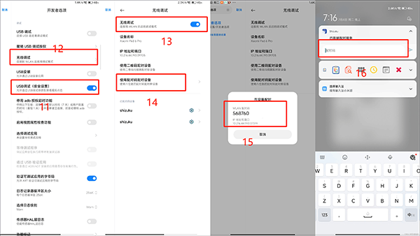

ShizukuRunner 深度解析：一个无 root 应用如何拿到 shell 权限
ShizukuRunner 没有 root、没有 Magisk，却能以 shell 身份执行 pm、am 等系统命令。本文拆解它通过 Shizuku Binder 通道和 Android 无线调试信任链绕过沙箱隔离的完整技术路径，以及这套设计的安全代价。
一个没有 root 的普通 Android 应用，凭什么能执行 pm disable-user、am force-stop 这些只有系统 shell 身份才能跑的命令？ShizukuRunner 给了一个干净得让人意外的答案，它的官网上对此有完整说明：它根本不绕过沙箱，而是从系统本身的信任机制里借了一条路。这条路就是 Android 的无线调试。
问题：Runner 的 shell 权限到底从哪来
Android 的权限模型设计里，普通 App 的 UID 是应用专属的 10000 段，shell UID 是 2000，root 是 0——三道墙把进程隔离得死死的。Runner 既不申请 root，也不注入 Magisk 模块，但它每次执行命令时，Shizuku 主应用顶部都会显示「SHIZUKU 已运行 已授权」，命令的退出码和输出也是标准 shell 权限下的结果。
这个权限不是 Runner 自己拿到的，是 Shizuku 主应用通过 Android 无线调试机制向系统「借」来的，然后通过 Binder 通道转发给 Runner。
拆解：从无线调试到命令执行的完整链路
整条权限传递链可以拆成四个环节，每个环节都是刻意设计的：
环节一：配对——让系统信任 Shizuku 服务进程
Android 11 引入了无线调试的配对码机制。当你在开发者选项里打开无线调试、用配对码在 Shizuku 主应用里完成配对后，系统内部实际上做了一件事：把 Shizuku 的服务进程加入了 shell 权限组。这不是 root，只是让它能以 shell UID 执行命令——但对大部分自动化场景来说已经够用了。
配对码本身是 IP:Port 绑定、约 60 秒过期的，这意味着系统不会随便让任何进程拿到 shell 权限，必须经过一次明确的、用户手动参与的配对流程。Runner 的设计选择了不在这一步做额外加固——它信任 Shizuku 已经帮它把好了权限入口。

环节二：Binder 通道——Shizuku 到 Runner 的权限转发
配对成功后，Shizuku 主应用启动一个服务进程，这个进程持有 shell 权限。你从官方下载安装的 Runner 作为客户端，通过 Android Binder IPC 连上 Shizuku 服务，把要执行的命令字符串传过去。Shizuku 服务以 shell 身份执行命令，把 stdout、退出码、执行权限信息打包回传给 Runner。
这个设计的巧妙之处在于：Runner 本身永远不持有 shell 权限——它只是个命令分发器，真正干活的是 Shizuku 的服务进程。如果 Runner 被卸载、被冻结，shell 权限不会泄露，因为权限始终挂在 Shizuku 服务进程上。
环节三：Exec Activity——暴露给外部的远程调用接口
Runner 做了一个很多同类工具不做的决定：它暴露了一个名为 Exec 的 Activity，接受来自任何 App 的 Intent，从 Intent extra 里读出命令字符串就直接执行。包名是 com.shizuku.uninstaller/.Exec，调用方式是：
adb shell am start -n com.shizuku.uninstaller/.Exec --es content "echo hello-runner"这个接口的设计意图很明确：让 Tasker、MacroDroid、甚至你自己写的小工具都能远程触发 Runner 执行命令，形成自动化生态。

环节四：pm/am 命令——系统级操作的载体
Runner 不实现任何具体功能——它不做冻结、不做卸载、不做权限管理。它做的事只有一件：把你给的命令原样交给 shell 执行。冻结用的是 pm disable-user --user 0，解冻用 pm enable，强制停止用 am force-stop。这种「零功能、纯通道」的设计让 Runner 本身保持极简，任何系统支持的命令它都能跑，包括 sh 脚本。
取舍：这套设计的代价是什么
每条路都有代价，Runner 选择的这条路代价集中在两个维度：安全信任链的脆弱性和 Android 版本的硬限制。
安全：谁能发 Intent，谁就能执行
Runner 对 Exec Activity 不做任何权限检查。只要一个 App 能通过 startActivity 启动 com.shizuku.uninstaller/.Exec，它就能让 Runner 执行任意 shell 命令——效果等同于拿到 shell 权限。这意味着：
- 安全性完全取决于「你的手机上装了什么 App」。如果某个你不信任的 App 有能力启动 Exec Activity，Runner 的整条权限链就对它敞开了。
- 配对码的 60 秒有效期和手动输入是目前唯一的「硬门槛」，但一旦配对完成，后续的安全就交给了 Android 本身的 Intent 分发机制。
- shizukurunner文档里也明确写了「只在你信任的自动化场景里用」——这不是免责声明，而是这套架构的客观边界。
兼容性：Android 11 是最低门槛
无线调试配对码模式是 Android 11（API 30）才引入的。Android 10 及以下的设备只能走 USB adb 方式，需要用电脑连一次来启动 Shizuku 服务。而部分定制系统（MIUI、ColorOS、鸿蒙）对无线调试做了额外的安全策略——有的自动关闭、有的拦截配对弹窗、有的需要在通知中心手动确认。Runner 本身绕过不了这些系统级限制，只能依赖用户正确配置系统设置。
执行边界：shell 不是 root
shell 权限能做的事很多——pm/am 命令、应用冻结/解冻、查询包列表、执行 sh 脚本——但它不能修改 system 分区，不能读写 /data/misc，不能执行需要 root 的 su。如果你需要真正的 root 操作（比如修改 hosts 文件、替换系统字体），Runner 这条路走不通，还是得 Magisk 或 KernelSU。
判断：这套原理意味着什么
Runner 的设计哲学是把系统给的能力用到极致，不额外造轮子。它不发明新的权限获取方法，而是老老实实站在 Android 无线调试这条信任链上，做一个纯粹的命令执行通道。这个定位让它在自动化场景下极其好用——配合 Tasker 写一条任务就能定时冻结社交全家桶，写个批处理就能批量清理预装应用——但也让它的安全模型完全依赖用户的自觉和设备环境的纯净。
适合谁：自动化重度玩家、喜欢用 Tasker/MacroDroid 搭建工作流的人、想要无 root 精简系统的玩家。这些场景下，Runner 提供的 shell 权限刚好够用，而且不会像 root 那样破坏系统完整性。
不适合谁：装了大量来源不明 App 的用户、需要修改 system 分区的深度定制需求、对安全模型要求极高的场景。Runner 的信任链太干净了——干净到任何能启动它的 App 都能借到权限，这在复杂环境下是个风险点。
从原理层面看，Runner 是一个教科书级的「用系统能力解决系统问题」的例子。它没有破解、没有注入、没有 hook——它只是让两个合法的应用通过合法的 Binder 通道连接起来，借了系统本来就有的 shell 权限。这条思路本身，比工具本身更值得记住。
这套社区维护的源码和资料在GitHub、Gitee、GitCode三个仓库都能拿到，方便不同网络环境下的开发者查阅和贡献。